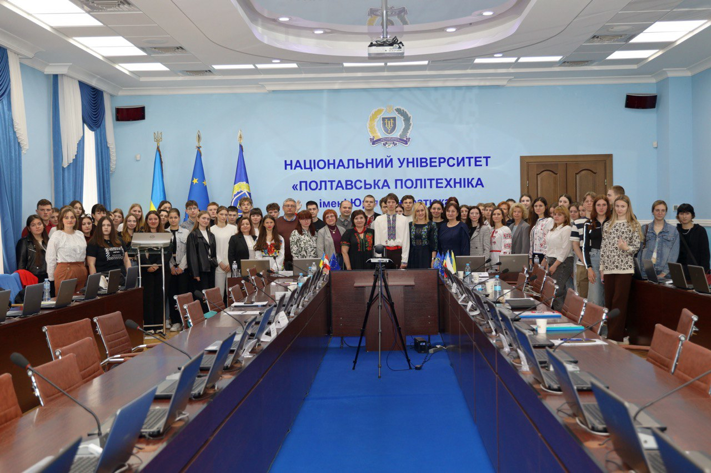
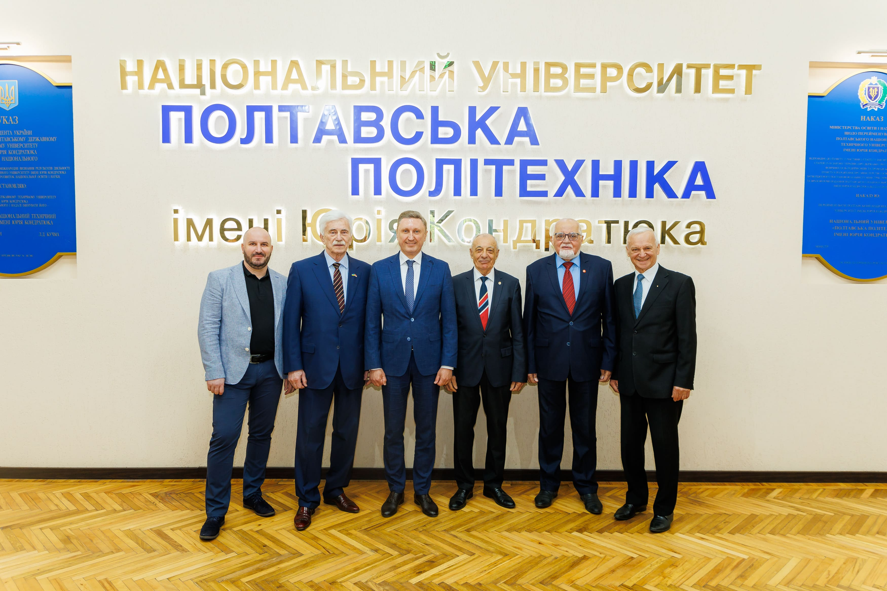
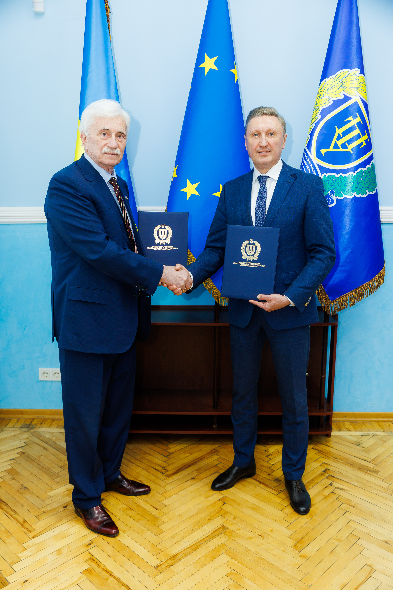
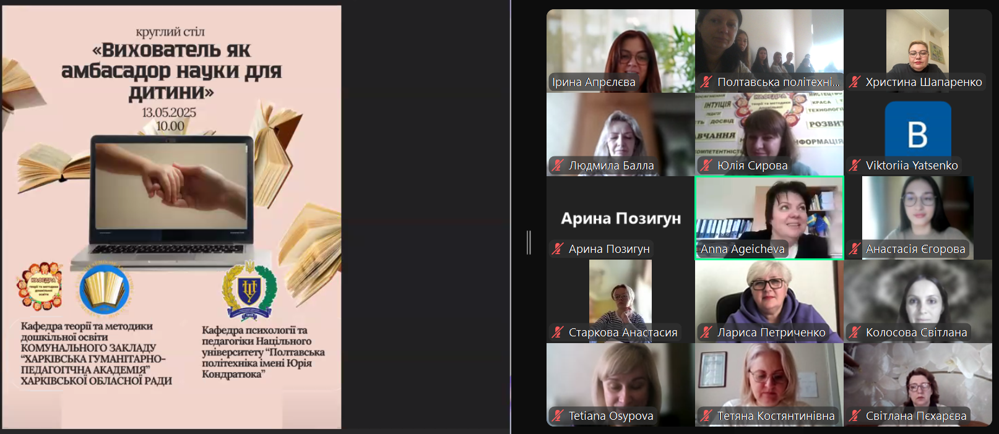
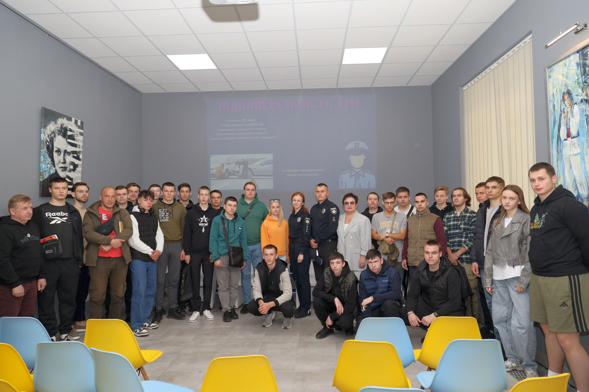
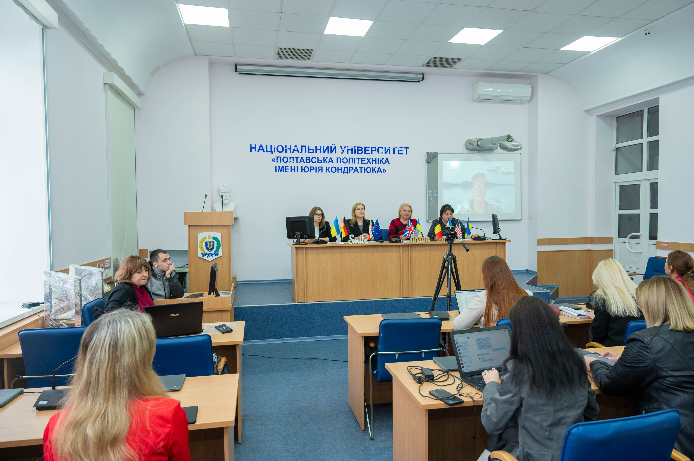

Новини


Категорія: Освіта
Запрошуємо на Наукову Весну «Science Day – 2025» у Полтавській політехніці!
22 травня 2025
Детальніше

Категорія: Студенти
Науковиця політехніки взяла участь у заході на тему академічної мобільності у STEM-галузях вищої освіти
20 травня 2025
Детальніше
Категорія: Події
Старший геолог компанії SLB Анастасія Шибецька розповіла членам студентського відділення SPE Полтавської політехніки про роботу геолога в сервісній компанії
20 травня 2025
Детальніше

Категорія: Конференції
Полтавська політехніка – майданчик міжнародного діалогу з питань економічної безпеки
19 травня 2025
Детальніше

Категорія: Події
Полтавська політехніка об’єднала науковців, освітян і будівельників задля розвитку будівельної галузі
19 травня 2025
Детальніше

Категорія: Засідання
Стратегічне партнерство задля відбудови України: підписання Меморандуму про співробітництво між Конфедерацією будівельників України та Полтавською політехнікою
19 травня 2025
Детальніше
Категорія: Студенти
Студенти Полтавської політехніки активно долучаються до ініціатив Європейського Союзу за програмою Erasmus+
19 травня 2025
Детальніше

Категорія: Освіта
У Полтавській політехніці під час круглого столу обговорили роль вихователя як амбасадора науки для дитини
16 травня 2025
Детальніше

Категорія: Заходи
У Полтавській політехніці для студентів поліцейські провели просвітницький захід «Безпечна дорога додому»
16 травня 2025
Детальніше

Категорія: Конференції
Філологи політехніки взяли участь у XІ Міжнародній науково-практичній конференції
14 травня 2025
Детальніше